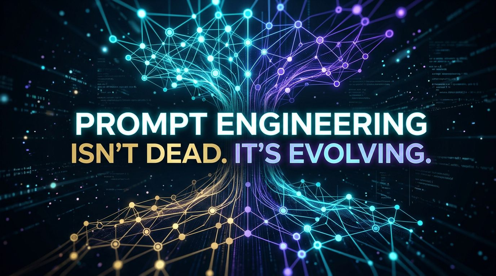
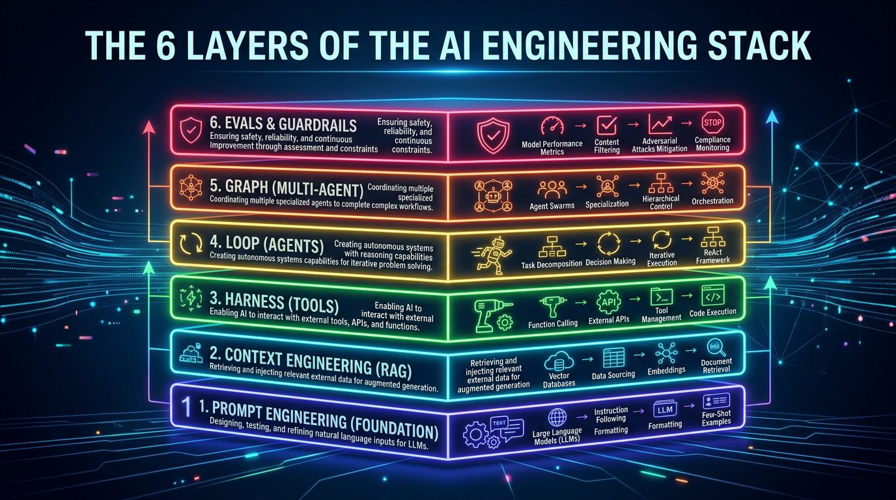

Prompt Engineering Isn't Dead. It's Evolving.
AI moves fast. Its vocabulary moves even faster. But nothing died — the stack simply grew larger.

AI moves fast. Its vocabulary moves even faster.
If you spend any time on Tech Twitter, LinkedIn, or developer forums, you've probably noticed a familiar pattern. Every few months, the timeline crowns a shiny new term while loudly writing an obituary for the previous one.
"Prompt Engineering is dead."
"No, it's Context Engineering."
"Actually, it's Agent Engineering."
"Now it's Graph Engineering."
It feels dizzying.
If you are a software engineer trying to build production systems, a founder making architectural choices, or a curious developer learning LLMs, it’s easy to feel like the ground beneath your feet is constantly shifting.
Everyone is declaring prompt engineering dead.
They are wrong.
Prompt engineering hasn't died. It evolved.
The Big Idea: Progress is Additive
Nothing in AI engineering is dead. The field evolves by adding new abstraction layers on top of existing foundations, not by replacing them.
Here is the central thesis of this newsletter:
Prompt engineering is the root foundation. Context engineering, tool harnesses, agentic loops, and multi-agent graph workflows do not replace prompt engineering. They build directly on top of it.
High-level systems cannot exist without solid roots.
When you look past the social media noise, you realize that new AI buzzwords aren't revolutionary replacements. They are simply higher-level control layers designed to solve specific limitations of the layers beneath them.
"Why do I believe this?" Look at Software Engineering
As software engineers, we have seen this movie before.
Cast your mind back over the history of computer science:
- We didn't stop writing functions when Object-Oriented Programming (classes) arrived. Functions simply became methods inside classes.
- We didn't abandon web APIs when microservices became popular. APIs became the communication boundaries between services.
- We didn't stop learning algorithms and data structures when high-level frameworks like React or PyTorch came out.
We built on top of them.
Functions ──► Classes & OOP ──► APIs ──► MicroservicesIn software design, progress is additive. You don't throw away fundamental building blocks when you adopt higher abstractions; you combine them to build larger systems.
AI engineering follows the exact same trajectory.
Every new concept in AI is simply another layer added to an evolving engineering stack.

Why does it matter? The Abstraction Trap
Lately, I’ve noticed a troubling pattern among developers building with LLMs.
Many teams rush straight to the shiny top layers of the stack—setting up complex multi-agent state graphs, autonomous reflection loops, and agentic frameworks—while ignoring the basic hygiene of prompt design and context management.
This creates what I call The Abstraction Trap.
If your base instruction prompt (Layer 1) is ambiguous, or your context payload (Layer 2) is stuffed with noisy, irrelevant data, wrapping it in a 10-node multi-agent graph (Layer 5) will not fix your product.
It will simply automate failure at scale—executing bad decisions faster while burning thousands of dollars in API token costs.
Frameworks hide low-level details, but they cannot fix flawed logic.
Prompt engineering didn't disappear. It became the foundational language spoken by every node inside every layer of the AI stack.
How does it work? The 6 Layers of the AI Stack
Instead of replacing earlier techniques, each layer answers a bigger practical question and expands what an AI system can do.
Here is how the complete stack fits together:
| Layer | Primary Question | One-Line Purpose |
|---|---|---|
| 1. Prompt Engineering | How should I ask? | Instructs the model how to think, reason, and structure output. |
| 2. Context Engineering | What should it know? | Supplies the model with relevant documents, memory, and data. |
| 3. Harness Engineering | What can it do? | Connects the model to real-world tools, sandboxes, and APIs. |
| 4. Loop Engineering | How does it improve? | Enables self-reflection, work verification, and automated retries. |
| 5. Graph Engineering | How do components coordinate? | Orchestrates multiple specialized agents across complex workflows. |
| 6. Evaluation & Guardrails | How do we know it works? | Measures accuracy, enforces safety, and prevents hallucinations. |
Walking Up the Stack (Step-by-Step Breakdown)
Let me break down what happens at each of these layers in real-world systems, defining the core technical terms as we go.
Layer 1: Prompt Engineering (Instruction)
- Question: How should I ask?
- What it is: At its core, a prompt is the precise text instruction sent to a Large Language Model (LLM). Prompt engineering is the discipline of defining task goals, setting system constraints, framing personas, and enforcing structured outputs (like JSON schemas).
- The Root: Every single LLM API call—no matter how complex the agent—begins with a prompt.
Layer 2: Context Engineering (Information)
- Question: What should it know?
- What it is: Prompts alone fail when the model lacks specific private data. Context engineering focuses on providing the exact information needed at inference time.
- Key Concepts:
- RAG (Retrieval-Augmented Generation): A technique where a system searches external documents first, then passes the relevant snippets into the LLM's prompt.
- Vector Database: A specialized database that stores text as numerical mathematical embeddings, allowing instant semantic search for relevant information.
Layer 3: Harness Engineering (Capabilities)
- Question: What can it do?
- What it is: An LLM in a box can only generate text; it cannot interact with the real world. A Harness surrounds the model with an execution environment.
- Key Concept:
- Tool Calling (Function Calling): Giving the model the ability to execute Python code in a secure sandbox, query SQL databases, search the live web, or trigger REST APIs.
Layer 4: Loop Engineering (Iteration)
- Question: How does it improve?
- What it is: Complex tasks are rarely solved in a single step. Loop Engineering wraps the LLM in an iterative execution cycle.
- Key Concept:
- Agent: An AI system equipped with a goal, tools, and a feedback loop (
Think → Act → Observe → Reflect → Retry). If a tool returns an error, the agent reads the error message, adjusts its plan, and tries again until the task is complete.
- Agent: An AI system equipped with a goal, tools, and a feedback loop (
Layer 5: Graph Engineering (Collaboration)
- Question: How do components coordinate?
- What it is: Single agent loops get bogged down when tasks become too broad. Graph Engineering links multiple specialized agents into a stateful, directed workflow (a Graph).
- Key Concept:
- Planner & Specialist Agents: One agent acts as a Planner Agent (breaking down a master goal), delegating sub-tasks to a Researcher Agent, a Writer Agent, and a Reviewer Agent, coordinating state across the network.
Layer 6: Evaluation & Guardrails (Testing)
- Question: How do we know it works?
- What it is: The top of the stack focuses on deterministic reliability.
- Key Concept:
- Evaluation (Evals) & Guardrails: Automated test suites using unit assertions and LLM-as-a-Judge scoring to continuously benchmark accuracy, detect hallucination rates, and enforce safety rules before shipping to users.
"Can you show me?" A Progressive Real-World Example
To see why layers build on top of each other, let me walk you through how a simple chatbot question evolves into an enterprise-grade AI system.
Step 1: The Simple Prompt (Layer 1)
You start with a basic instruction:
"You are a financial analyst. Summarize my company's revenue growth."
Result: The AI responds with generic financial advice because it has never seen your private financials.
Step 2: Adding Context via RAG (Layer 2)
You connect your company's Q3 PDF report stored in a Vector Database. The system retrieves the exact financial tables and inserts them into the prompt.
Result: The AI now accurately quotes your revenue numbers directly from the document.
Step 3: Adding a Calculator Tool (Layer 3)
You ask for exact quarter-over-quarter percentage growth. Instead of letting the LLM guess math (which LLMs are notoriously bad at), the model invokes a Python calculator tool.
Result: The AI returns precise, verified math calculations.
Step 4: Adding a Self-Correction Loop (Layer 4)
The Python tool returns a TypeError because a column header had a missing dollar sign. The AI reads the error trace, modifies the Python script, and re-executes the calculation automatically.
Result: The system recovers from runtime errors without human intervention.
Step 5: Adding a Multi-Agent Graph (Layer 5)
You expand this into a complete Quarterly Report Generator. A Planner Agent divides the report into sections. A Data Agent runs financial queries. A Writer Agent drafts chapters, and a Reviewer Agent verifies formatting before publishing.
User Question
↓
[Layer 1] Prompt (Role & Format Instructions)
↓
[Layer 2] Context (PDF Financial Documents via RAG)
↓
[Layer 3] Tool (Python Math & SQL Execution Sandbox)
↓
[Layer 4] Loop (Self-Correction on Tool Errors)
↓
[Layer 5] Graph (Planner ──► Researcher ──► Reviewer)
↓
Final Production OutputNotice what happened here: Each layer built directly on the previous one. The graph didn't replace the prompt; it coordinated multiple prompts working together.
Common Misconceptions
Let's address two of the most common myths circulating in the developer ecosystem:
"Prompt engineering is dead because we have autonomous agents."
Reality: Every single node in an autonomous agent graph still executes a prompt under the hood. Prompt engineering didn't die—it evolved from writing simple chat messages into designing system-level instruction architecture.
"Adding an agentic loop automatically makes your AI system smarter."
Reality: If your base prompt is vague or your context contains bad data, putting an LLM in a self-reflection loop will just cause it to hallucinate in circles while burning through your token budget.
Mental Model: The Engine & Transmission
Here is a mental model to keep in mind whenever you evaluate new AI frameworks:
Building a complex multi-agent graph with weak prompt and context foundations is like installing a high-end automatic transmission on a broken car engine.
The transmission can shift gears back and forth all day, but if the engine isn't firing, the car still won't move forward.
Prompts and context are your engine. Graphs and loops are your transmission. You need both to drive.
Key Takeaway: Fundamentals Compound
Nothing died. The stack simply grew larger.
Technology evolves. Fundamentals compound.
Once you understand the core layers of the AI engineering stack, every new tool, framework, or trend becomes easier to evaluate—and impossible to be misled by.
That is the mission of AI Fundamentals in a World Obsessed with Hype: to help you look past temporary social media trends, understand first principles, and build AI systems that actually work in production.
Think About It
What is one AI concept, buzzword, or framework that has felt confusing or overhyped to you recently?
Let me know in the comments below, and we'll break it down from first principles in an upcoming issue!
Understand systems,
not trends.
Join engineers and builders who want first-principles clarity on AI. Free, forever.
No spam. Unsubscribe anytime.